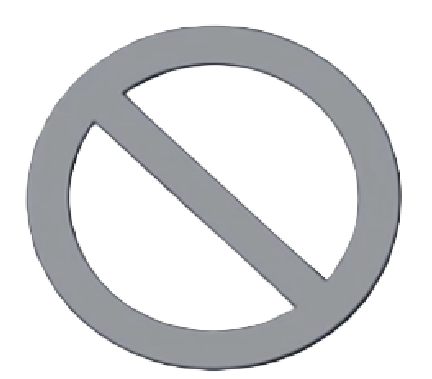
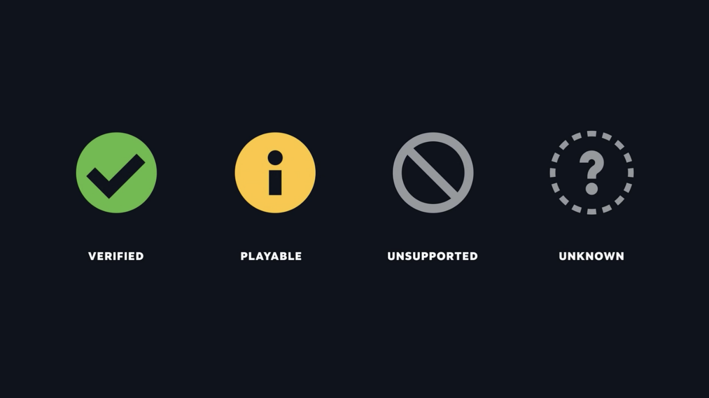

5. The Steam Store
Just like on the PC version of Steam, the Steam Store on the Steam Deck is where you can purchase more games.
This section goes over how to access the Steam Store, purchase games, and more!
5.1 Access the Steam Store
To access the Steam Store:
- Press the .
- Select .

Figure 5.1: The Store option within the Steam Menu.
5.2 Search the Steam Store
To search for games within the Steam Store, go to the page of the store.

Figure 5.2: The Search Steam page.
From there, you can type in keywords for your search.
Steam will list titles based on the criteria as well as your preferences.

Figure 5.3: An example of a search within the Steam Store for relevance to the phrase, "cats."
For each game listed in your search results, Steam will show you its price, release date, and overall rating based on reviews in the Steam Store:
 indicates positive reviews
indicates positive reviews indicates mixed reviews
indicates mixed reviews indicates negative reviews
indicates negative reviews
You can also see if the games in your results are Verified based on their icon (more on Verified Games in Section 5.3).
Any games that you already own will show up with this symbol:  to indicate that they are already in your library.
to indicate that they are already in your library.
You can sort your search by other criteria besides relevancy by clicking the drop-down list next to . You can sort by:
- Release Date
- Name
- Lowest Price
- Highest Price
- User Reviews
- Steam Deck Compatibility Review Date

Figure 5.4: The Sort By menu.
5.3 Verified Games
As you get familiar with the Steam Library and the Steam Store, it is important to know about a term called .
When a game's compatibility is considered Verified that means that the experience of playing it on the Steam Deck meets certain standards.
Verified Games have a next to their name to show that:
- They have all of their functionality accessible when using the default controller configuration
- They show Steam Deck controller icons
- Their in-game interface text is legible on the Steam Deck
- Their default graphics configuration performs well on the Steam Deck
Some games are trickier to play because of their controls or the interface is hard to read. These games are not Verified, but considered Playable and are indicated with this symbol:
Some games are too difficult to play on the Steam Deck, and so these are called Unsupported and are indicated by this symbol:
If a game has a that means Steam has not gotten enough data yet to determine a game's Verified status. The compatibility of these games is considered Unknown.
Steam utilizes its users' input to evaluate if games are easily playable and worthy of the Verified status. Occasionally, when closing a game, the Steam Deck will ask you if your experience with it matches whether it is Verified, Playable, or Unsupported.
Figure 5.5: Steam Deck Compatibility Icons
5.4 Wishlist a Game
The page is where all games that you have selected to put on your Wishlist will appear.

Figure 5.6: The Wishlist page.
To put a game onto your Wishlist:
- Find its page within the (Steam > Store).
- Scroll down in the game's page until you find the button and select it.
Now, that game will appear in your Wishlist, allowing you to get notifications about when it goes on sale, or when it is released if it is not out yet.

Figure 5.7: The Add to Your Wishlist button.
5.5 Buy a Game
To buy a game on the Steam Deck:
- Go to the (Steam > Store).
- Navigate to the game you wish to buy.
- Select .
- Finish checking out.
Your game will start downloading automatically.
Once your game is done downloading, it will show up in your Library.
5.6 Write a Review
To write a for a game:
- Go to the game's page within your Library.
- Scroll down until you see the dialogue box with the title, "Write a review for [game name]."
- After typing in your review into the dialogue box, you can choose to have your review show up as Public or Friends Only by clicking on the button under the dialogue box. You can also indicate whether or not you recommend the game to others by clicking on the appropriate button.
- When you are ready to post your review, click the button.

Figure 5.8: Writing a review for the game "Among Us" on the Steam Store.
Next Section
Back to Table of Contents